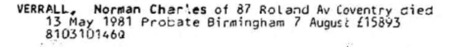
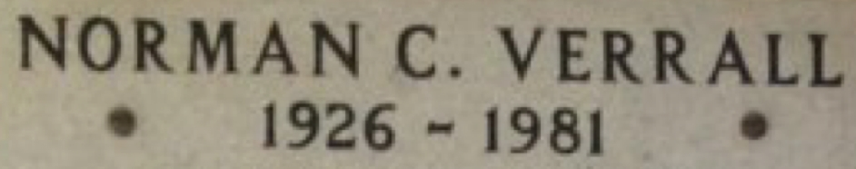

Norman Charles Verrall 1926 - 1981
[ Home ] | [ Calendar ] | [ Surnames Index ] | [ Errors ] | [ Family History ]The 3rd of 5 children of Ernest Verrall (a window cleaner) and Ella Spratt (a charwork), Norman Verrall, the first cousin once-removed on the father's side of Nigel Horne, was born in Thanet, Kent, England on 15 Mar 19261,2,3. He married Ena Bailes in Cannock, Staffordshire, England around Aug 19495. In 1981, he was living at 87 Roland Avenue, Coventry, Warwickshire, England.
He died on 13 May 1981 in Coventry2,3,4 and was buried there at Canley Garden Cemetery c. 1981.
Parents
- Ernest Charles was born on 12 May 1890
- Ella was born on 2 Feb 1895
Citations
- England & Wales births 1837-2006 - Findmypast
- England & Wales deaths 1837-2007 - Findmypast
- England Billion Graves cemetery index - Findmypast
- England & Wales Government Probate Death Index 1858-2019 - Findmypast
- England & Wales Marriages 1837-2005 - Findmypast
Media
Norman Charles Verrall - probate

Sign at cemetery

England & Wales births 1837-2006 - BMD/B/1926/2/AZ/001372/009
England Billion Graves cemetery index - US/BMD/BILLION/007621775
England & Wales deaths 1837-2007 - BMD/D/1981/2/AZ/001118/123
England & Wales marriages 1837-2005 Transcription - BMD-M-1949-3-AZ-001712-107
England Billion Graves cemetery index - US/BMD/BILLION/007789252
England & Wales Government Probate Death Index 1858-2019 - GBOR/GOVPROBATE/C/1981-1981/00223271
Family Tree

Map
Generated by ged2site. Last updated on Jul 3, 2024
Known Issues
Burial date (abt 1981) has no citations
Residence record for 1981 contains no citation
1939 UK register information missing